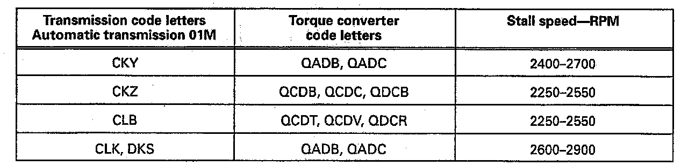

Checking Stall Speed
- Connect tachometer, e.g. VAG 200 VW1367 or equivalent to engine or with VAG 1551 Scan Tool or equivalent, read engine rpm in measuring value block.- Lock wheels with parking brake and foot brake.
- Start engine and place selector lever in D position
- Briefly apply Wide Open Throttle (max. 5 seconds).
If necessary repeat after 20 seconds.
The stall speed listed in the chart must be attained.

- If end speed is not attained, check the following;
- Stall speed too high:
Forward clutch slips
- Stall speed up to 200 rpm too low:
Check engine adjustment
- Stall speed over 200 rpm too low:
Torque converter faulty
- If in doubt, always check the engine adjustment and correct if necessary.
- The correct torque converter must always be installed with the correct transmission.